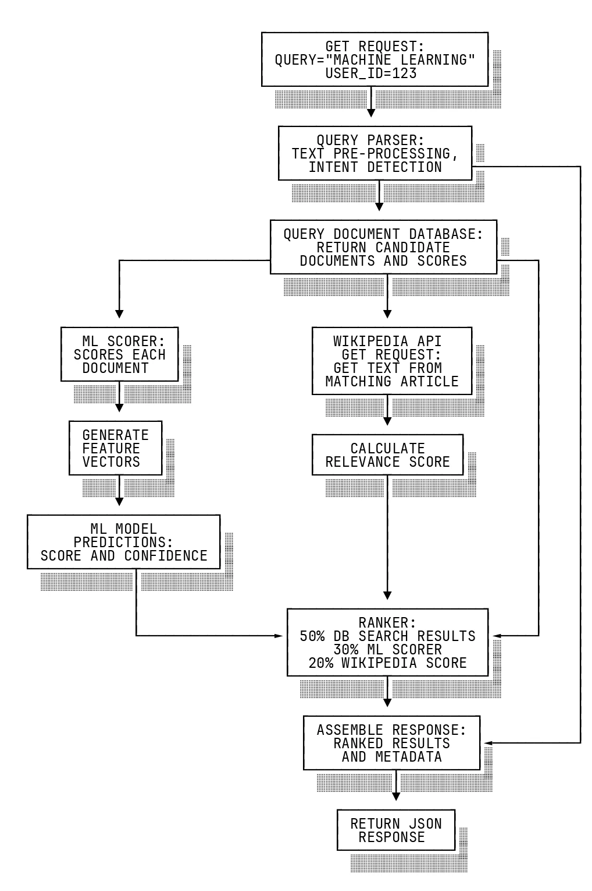
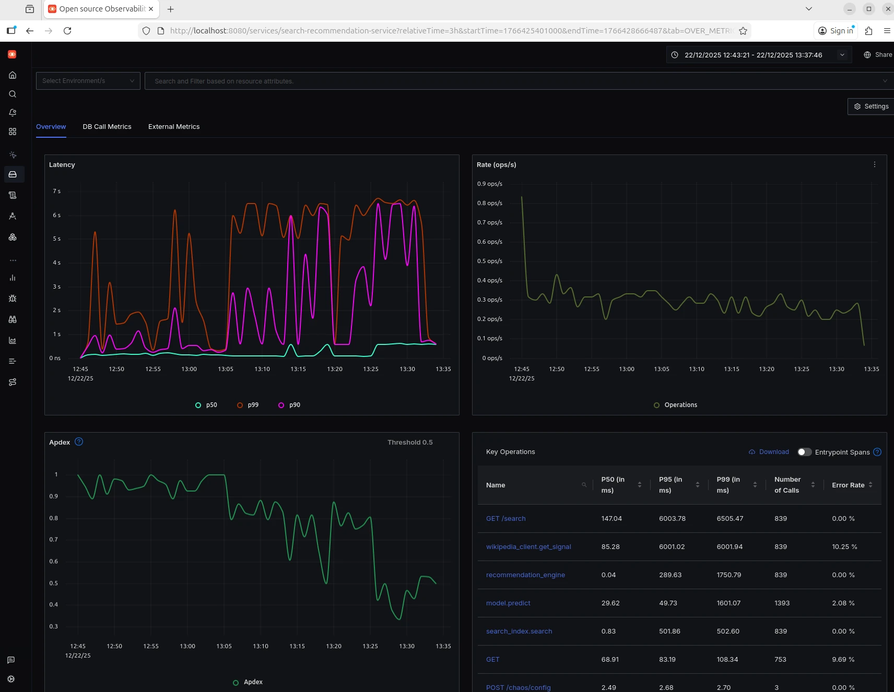
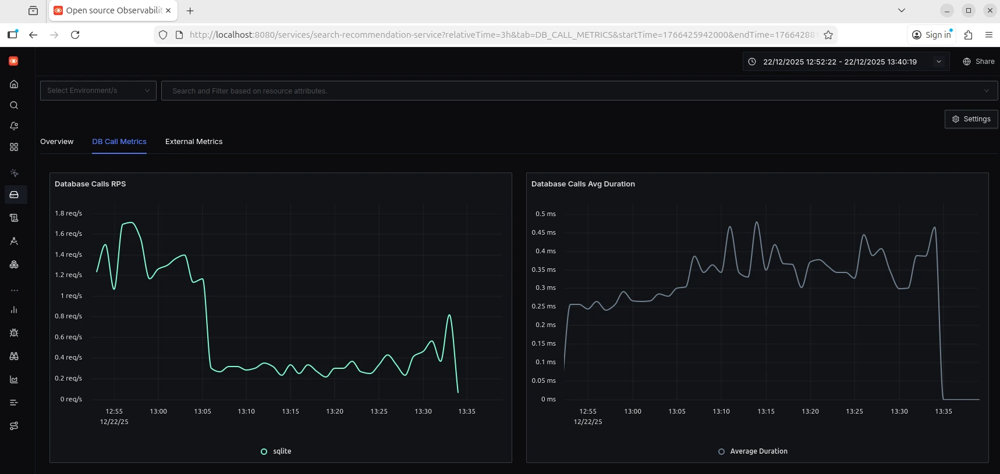
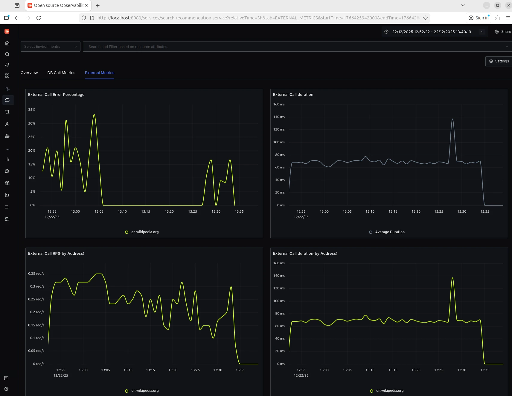
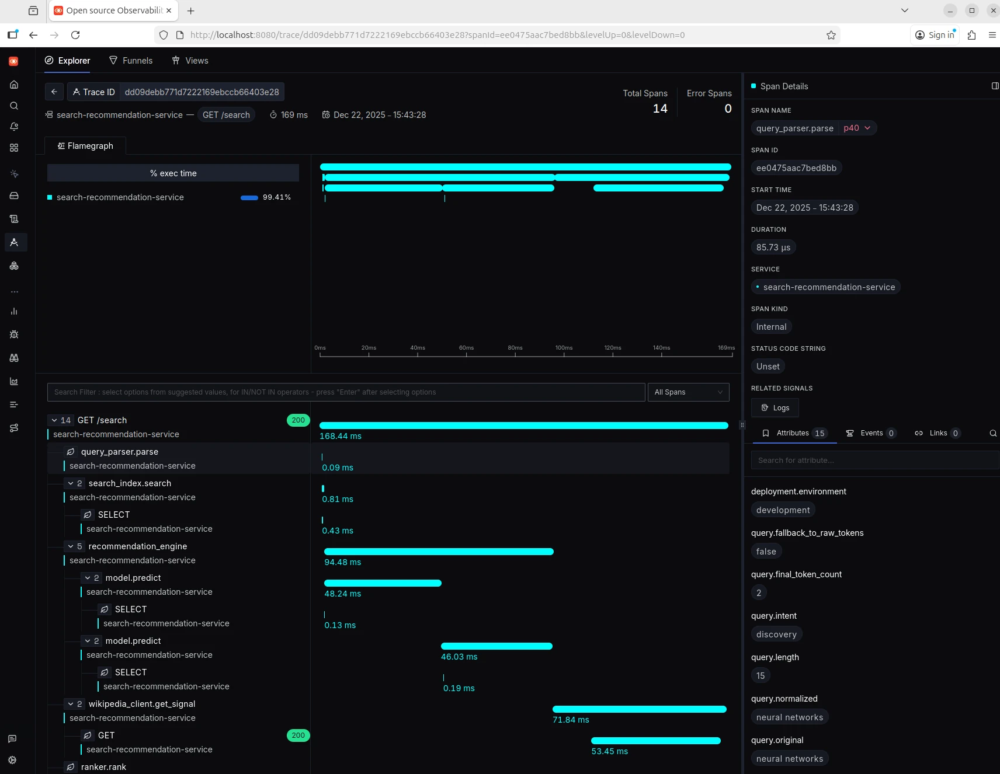

Roni Kobrosly Ph.D.'s Website
written by Roni Kobrosly on 2025-12-21 | tags: observability engineering open source machine learning
Observability is your friend
This is the first installment of a three-part post on observability, OpenTelemetry (Otel), and ML microservices. Stay tuned for parts two and three...
Over the last few years I've been working within a large SRE org and I've come to deeply appreciate observability in the software engineering world. After talking with a number of engineers and leaders in the tech industry, my sense is that there is no final observability end state, it's a perpetual journey of improvement. Also, even in the most tech-forward organizations, with hundreds or thousands of people, there is a pervasive sense of "we're not doing this very well."
I'm a data science / machine learning / AI engineer, and sadly AI/ML observability feels like a very niche topic. Let's say you've got your incredible AI/ML microservice deployed to production. Look at you, guy! Congratulations! You got your kudos from the leadership team. With a few minutes of Cloudwatch querying, you can tell it's getting several requests per second, so it is being used. You've almost made it through the AI/ML failure funnel. Now that you're here, how do you ensure it's running well? How do you identify subtle issues without scouring through a sea of log text? How do you easily diagnose issues in your model or the logic surrounding your model?
Observability is the ability to painlessly understand the internal state of a software system. This means you're able to quickly detect and pinpoint the cause of problems. But it's also more than just hunting for errors. It also allows you proactively fix subtle inefficiencies and even helps you optimize your software (identifying bottlenecks, etc.).
Observability is typically built on three pillars:
Metrics: Numerical measurements aggregated over time. Request rates, error rates, latency percentiles, CPU usage, or business KPIs.
Logs: Discrete records of events that happened, providing detailed context about specific operations or errors.
Traces: Records of requests as they flow through distributed systems, showing the path and timing across multiple services. E.g. Request 301830 went from service A -> service D -> service F -> service K, and here are the duration, status codes, and such for each hop (also called a "span") in that journey.
At the more mature tech shops, there are Service Level Objectives (SLOs) and Service Level Indicators (SLIs) in place. SLIs are metrics like latency or errors per thousand requests, while SLOs are quantitative targets you aim to hit (e.g. "< 0.5% error rate for our authentication service").
Enter OpenTelemetry
In Boris Tane's "LoggingSucks", one my favorite posts from 2025, he makes a convincing case that standard logging practices make for a miserable observability experience: plain text logs are hard to parse, there is too little context around any single log line, they don't lead to a holistic understanding of how the application is working, and if it's a large application made by a team then there can be a lack of standardization to deal with, and then you're at the mercy of what everyone else wants to log. All of these points are about "big" errors and don't even touch on the more subtle bugs that can drive us crazy. Good luck with those.
ML operations (AKA "MLOps") has been a growing discipline for years, and from what I can tell it touches on some aspects of observability, but it's pretty distinct. MLOps focuses on model versioning/tracking, model CI/CD, monitoring for drift, reproducibility, and feature access. The "monitoring for drift" piece is about detecting declines in model performance and data drift, but that's different than the observability we discussed above.
OpenTelemetry (OTel) is an open source, tool-agnostic framework for helping with the generation, collecting, and exporting of software metrics, logs, and traces. It's fantastic. It's certainly not an observability silver bullet (no tool will help you achieve observability if your software is poorly written or poorly instrumented) but it's pretty damn close.
A toy ML microservice to demo OTel
To give you a light demo on OTel (see my GitHub repo), I made a toy recommendation engine. It's a FastAPI microservice that takes free text and recommends a relevant document (it's basically semantic search). The data flow of the application is shown below.

It includes a toy ML model, a SQLite database, and a real request to the Wikipedia search API. Sure, a real ML microservice might not contain all of these things, but I wanted the app to cover many OTel features.
Instrumenting this application with OTel is a pretty straight forward process:
1) Create your application. Duh. Ensure it is written in a clean, modular fashion so that each of the modules has distinct and important attributes that you can expose (see the warning in the final section...)
2) Set up your observability data sink. This can be relational data warehouse or a data lake. In my demo I used ClickHouse, an open-source database management system.
3) Set up your UI for exploring logs, metrics, and traces. SigNoz is an excellent open-source option. It's an observability platform that natively with OTel. It allows you to create and explore dashboards, search logs, visualize traces, set alerts for anomalies, etc. In my experience, it everybit as flexible and intuitive as commercial solutions.
4) Have OTel collectors point to ClickHouse and SigNoz.
Below is the code from the toy project's telemetry.py file, which is used through the app. Yes, there is more to the process than dropping this code into your project, but not that much more. As you can see, OTel natively works with common databases (SQLite in this case) and plays very nicely with FastAPI.
from opentelemetry import trace, metrics from opentelemetry.sdk.trace import TracerProvider from opentelemetry.sdk.trace.export import BatchSpanProcessor from opentelemetry.sdk.metrics import MeterProvider from opentelemetry.sdk.metrics.export import PeriodicExportingMetricReader from opentelemetry.sdk.resources import Resource, SERVICE_NAME, SERVICE_VERSION from opentelemetry.exporter.otlp.proto.grpc.trace_exporter import OTLPSpanExporter from opentelemetry.exporter.otlp.proto.grpc.metric_exporter import OTLPMetricExporter # Auto-instrumentation imports from opentelemetry.instrumentation.fastapi import FastAPIInstrumentor from opentelemetry.instrumentation.httpx import HTTPXClientInstrumentor from opentelemetry.instrumentation.sqlite3 import SQLite3Instrumentor from app.core.config import settings import logging logger = logging.getLogger(__name__) def setup_telemetry(): """Initialize OpenTelemetry with SigNoz exporters""" # Define resource attributes resource = Resource(attributes={ SERVICE_NAME: settings.otel_service_name, SERVICE_VERSION: settings.otel_service_version, "deployment.environment": settings.otel_deployment_environment, "service.namespace": "ml-demo", }) # Setup Tracing trace_provider = TracerProvider(resource=resource) # Use BatchSpanProcessor for production efficiency otlp_span_exporter = OTLPSpanExporter( endpoint=settings.otel_exporter_otlp_endpoint, insecure=True # Set to False if using TLS ) trace_provider.add_span_processor( BatchSpanProcessor( otlp_span_exporter, max_queue_size=2048, max_export_batch_size=512, export_timeout_millis=30000, ) ) trace.set_tracer_provider(trace_provider) # Setup Metrics otlp_metric_exporter = OTLPMetricExporter( endpoint=settings.otel_exporter_otlp_endpoint, insecure=True ) metric_reader = PeriodicExportingMetricReader( otlp_metric_exporter, export_interval_millis=60000 # 1 minute ) meter_provider = MeterProvider( resource=resource, metric_readers=[metric_reader] ) metrics.set_meter_provider(meter_provider) logger.info( "OpenTelemetry initialized", extra={ "service_name": settings.otel_service_name, "endpoint": settings.otel_exporter_otlp_endpoint } ) def instrument_app(app): """Apply auto-instrumentation to FastAPI app""" # FastAPI auto-instrumentation # Note: excluded_urls can cause issues with status code reporting FastAPIInstrumentor.instrument_app( app, tracer_provider=trace.get_tracer_provider() ) # httpx auto-instrumentation (for Wikipedia API) HTTPXClientInstrumentor().instrument() # SQLite3 auto-instrumentation SQLite3Instrumentor().instrument() logger.info("Auto-instrumentation applied")
Make sure that you record all important attributes within all modules of your codebase. Yes, OTel out-of-the-box collects a lot of standard health information for each span, but it's important to collect your own attributes too. Later on, this will allow you to click on a single jump in a request's trace and see an enormous amount of information. This is an simple as the following:
... span = trace.get_current_span() # Add query attributes span.set_attribute("query.original", query) span.set_attribute("query.length", len(query)) span.set_attribute("query.final_tokens", final_tokens) span.set_attribute("query.custom_thing", my_custom_thing) ...
The final architecture of it all looked like this:

Once I started up the microservice, I immediately started seeing data being piped to ClickHouse. Out-of-the-box, with the setup shown above in the code, you get basic dashboards with views of:
- Overall request latency, response status codes, and Apdex.
- Database reads and writes and operation duration
- A bunch of health metrics around the external API call that the service makes
- The start time, end time, duration, health, and any custom attributes for each individual jump in every request trace.
By default, each of these is shown in a time series, but it's fairly easy to convert these into bar charts, group them by some dimension, etc.
See the screenshots below:
  
Yeah, the trace UI takes a little time to get use to since you're looking at so many simultaneous data representations together, like a graph of trace span paths, the health metrics for each span, and the generous metadata for each span. By default SigNoz visualizes the spans of traces in a way that looks like a flame graph.
When I first set up this demo, I made a mistake in how I was formatting my API calls to Wikipedia. This was producing a silent error. I immediately and accidentally found this error by looking at the trace data, seeing that the Wikipedia span was in poor health. Very cool...

If you're thinking that this sort of observability operation would quickly fill a massive data warehouse and would bankrupt a large company with 100s or 1000s of microservices and millions of active users ... you're helping me transition to my next point. Sampling is usually employed to reduce costs. Simple random sampling isn't going to capture many of the logs of interest (failures and errors are generally rare events). There are multiple sampling methods and within each of these methods there are settings to play with. That said, a simple "long tail sampling" within OTel collectors works nicely! Here's a super basic demo of a long tail sampler:
import random def generate_logs(n=1000): """Generate mock logs: mostly fast/successful, some errors/slow""" logs = [] for _ in range(n): is_error = random.random() < 0.05 # 5% errors is_slow = random.random() < 0.02 # 2% slow requests logs.append({ 'status': 500 if is_error else 200, 'duration_ms': random.uniform(1000, 3000) if (is_error or is_slow) else random.uniform(10, 200) }) return logs def should_sample(log, base_rate=0.01): """Decide if we should keep this log""" # Always sample errors if log['status'] >= 500: return True, 'error' # Always sample slow requests (>1000ms) if log['duration_ms'] > 1000: return True, 'slow' # Sample normal traffic at low rate (1%) if random.random() < base_rate: return True, 'normal' return False, None # Demo logs = generate_logs(10000) sampled = [log for log in logs if should_sample(log)[0]] errors = sum(1 for log in logs if log['status'] >= 500) slow = sum(1 for log in logs if log['duration_ms'] > 1000) print(f"Generated {len(logs)} logs") print(f"Sampled {len(sampled)} logs ({len(sampled)/len(logs)*100:.1f}%)") print(f"\nCaptured ALL {errors} errors and ALL {slow} slow requests") print(f"Plus ~1% of normal traffic for baseline")
When you want to ensure the reliability of the ML model itself, I think you've made it to the sometimes blurry boundary line between observability and MLOps. I would argue that observability is about making the internals of software systems easily, well, observable, to ensure your system reliably works. Detecting meaningful data and conceptual drift requires statistical thinking about distributions and populations over time, and so it isn't as low-level as observability (and its focus on requests, uptime, traces, etc.). So while I don't think the methods of observability are completely applicable to monitoring model performance, you could probably track immediate metrics around like clicks after prediction, dismissals, thumbs up or down, or dwell time.
A parting warning: OTel alone won't save you
Slapping OTel code into all of your applications and exporting the output to a database, alone, won't get you to the observability promised land. Remember, if your software is poorly written and your systems of applications aren't structured well, OTel won't do you much good. How useful is a detailed trace if your software isn't structured so that there are clearly defined modules to track? You also need to proactively think about failure modes too. For ML recommender portion of this project, I needed to take stock of what attributes would be most helpful should I need to find very subtle issues during model inference.
Stay tuned for parts two and three!